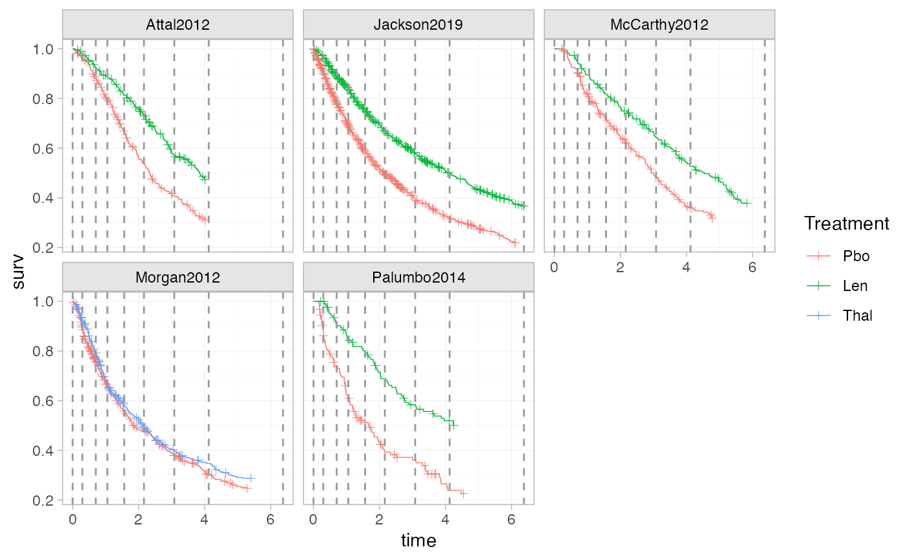
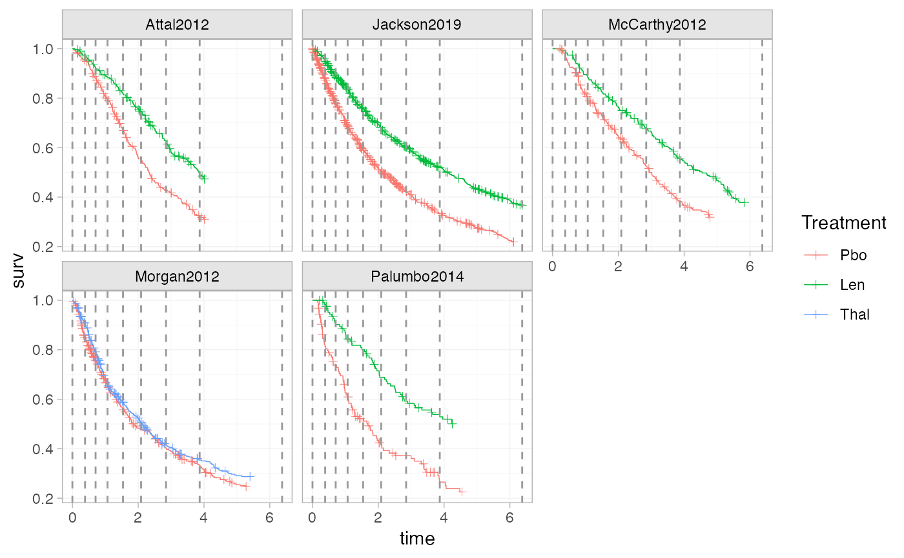
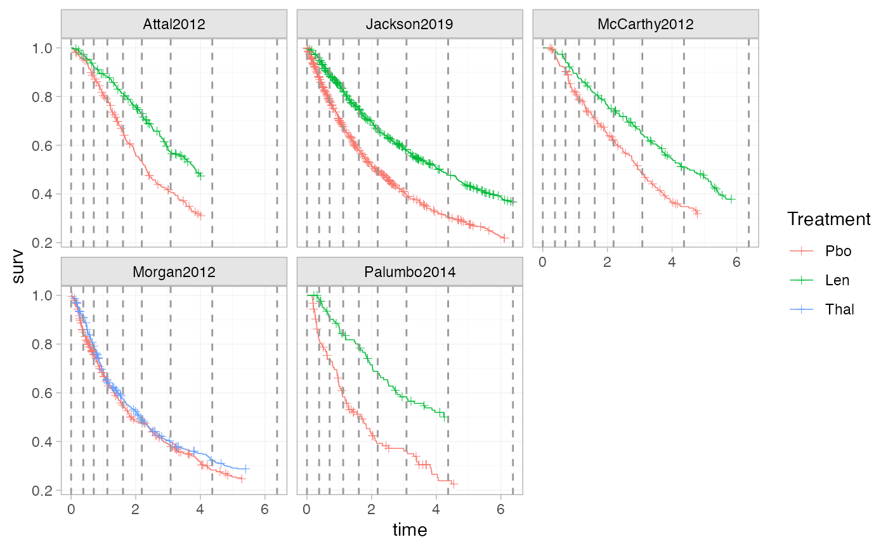

Several different algorithms are provided to calculate knot locations for
M-spline baseline hazard models. This function is called internally within
the nma() function, but may be called directly by the user for more
control.
Usage
make_knots(
network,
n_knots = 7,
type = c("quantile", "quantile_common", "quantile_lumped", "quantile_longest", "equal",
"equal_common")
)Arguments
- network
A network object, containing survival outcomes
- n_knots
Non-negative integer giving the number of internal knots (default
7)- type
String specifying the knot location algorithm to use (see details). The default used by
nma()is"quantile", except when a regression model is specified (usingaux_regression) in which case the default is"quantile_common".
Details
The type argument can be used to choose between different
algorithms for placing the knots:
"quantile"Creates separate knot locations for each study, internal knots are placed at evenly-spaced quantiles of the observed event times within each study.
"quantile_lumped"Creates a common set of knots for all studies, calculated as evenly-spaced quantiles of the observed event times from all studies lumped together.
"quantile_common"Creates a common set of knots for all studies, taking quantiles of the quantiles of the observed event times within each study. This often seems to result in a more even knot spacing than
"quantile_lumped", particularly when follow-up is uneven across studies, and may handle differing behaviour in the baseline hazard across studies better than"quantile_longest"."quantile_longest"Creates a common set of knots for all studies, using evenly-spaced quantiles of the observed event times in the longest study.
"equal"Creates separate knot locations for each study, at evenly-spaced times between the boundary knots in each study.
"equal_common"Creates a common set of knots for all studies, at evenly-spaced times between the earliest entry time and last event/censoring time in the network.
Boundary knots are calculated as follows:
For separate knot locations in each study, boundary knots are placed at the earliest entry time and last event/censoring time in each study.
For a common set of knots across all studies, boundary knots are placed at the earliest entry time and last event/censoring time across all studies.
Models with regression on the spline coefficients (i.e. with aux_regression
specified) require a common set of knots across all studies.
Provided that a sufficient number of knots are used, model fit should be largely unaffected by the knot locations. However, sampling difficulties can sometimes occur if knot placement is poor, for example if a knot is placed just before the last follow-up time in a study.
Examples
# Set up newly-diagnosed multiple myeloma network
head(ndmm_ipd)
#> study trt studyf trtf age iss_stage3 response_cr_vgpr male
#> 1 McCarthy2012 Pbo McCarthy2012 Pbo 50.81625 0 1 0
#> 2 McCarthy2012 Pbo McCarthy2012 Pbo 62.18165 0 0 0
#> 3 McCarthy2012 Pbo McCarthy2012 Pbo 51.53762 1 1 1
#> 4 McCarthy2012 Pbo McCarthy2012 Pbo 46.74128 0 1 1
#> 5 McCarthy2012 Pbo McCarthy2012 Pbo 62.62561 0 1 1
#> 6 McCarthy2012 Pbo McCarthy2012 Pbo 49.24520 1 1 0
#> eventtime status
#> 1 31.106516 1
#> 2 3.299623 0
#> 3 57.400000 0
#> 4 57.400000 0
#> 5 57.400000 0
#> 6 30.714460 0
head(ndmm_agd)
#> study studyf trt trtf eventtime status
#> 1 Morgan2012 Morgan2012 Pbo Pbo 18.72575 1
#> 2 Morgan2012 Morgan2012 Pbo Pbo 63.36000 0
#> 3 Morgan2012 Morgan2012 Pbo Pbo 34.35726 1
#> 4 Morgan2012 Morgan2012 Pbo Pbo 10.77826 1
#> 5 Morgan2012 Morgan2012 Pbo Pbo 63.36000 0
#> 6 Morgan2012 Morgan2012 Pbo Pbo 14.52966 1
ndmm_net <- combine_network(
set_ipd(ndmm_ipd,
study, trt,
Surv = Surv(eventtime / 12, status)),
set_agd_surv(ndmm_agd,
study, trt,
Surv = Surv(eventtime / 12, status),
covariates = ndmm_agd_covs))
# The default knot locations
make_knots(ndmm_net, type = "quantile")
#> $Attal2012
#> 12.5% 25% 37.5% 50% 62.5% 75% 87.5%
#> 0.0000000 0.5934115 0.9482775 1.3534460 1.7149769 2.1791543 2.6156006 3.3067856
#>
#> 4.0144924
#>
#> $Jackson2019
#> 12.5% 25% 37.5% 50% 62.5% 75% 87.5%
#> 0.0000000 0.3764953 0.7013167 1.1208075 1.6061797 2.1894017 3.0797028 4.3685050
#>
#> 6.3743523
#>
#> $McCarthy2012
#> 12.5% 25% 37.5% 50% 62.5% 75% 87.5%
#> 0.000000 0.706951 1.051770 1.519605 2.067261 2.791005 3.383530 4.231690
#>
#> 5.833333
#>
#> $Morgan2012
#> 12.5% 25% 37.5% 50% 62.5% 75% 87.5%
#> 0.0000000 0.2730038 0.5063235 0.7761775 1.0551856 1.5629825 2.2663204 3.2201496
#>
#> 5.4000000
#>
#> $Palumbo2014
#> 12.5% 25% 37.5% 50% 62.5% 75% 87.5%
#> 0.0000000 0.3154367 0.5906098 0.9345159 1.1814523 1.7505439 2.1409332 3.1120086
#>
#> 4.5438931
#>
# Increasing the number of knots
make_knots(ndmm_net, n_knots = 10)
#> $Attal2012
#> 9.090909% 18.18182% 27.27273% 36.36364% 45.45455% 54.54545% 63.63636%
#> 0.0000000 0.4855970 0.7296991 1.0274442 1.3229218 1.5913659 1.9091936 2.2146202
#> 72.72727% 81.81818% 90.90909%
#> 2.4965883 2.9410168 3.5442040 4.0144924
#>
#> $Jackson2019
#> 9.090909% 18.18182% 27.27273% 36.36364% 45.45455% 54.54545% 63.63636%
#> 0.0000000 0.2850731 0.5160902 0.7852926 1.0889435 1.3955587 1.7796685 2.2724055
#> 72.72727% 81.81818% 90.90909%
#> 2.9445333 3.7260169 4.8115468 6.3743523
#>
#> $McCarthy2012
#> 9.090909% 18.18182% 27.27273% 36.36364% 45.45455% 54.54545% 63.63636%
#> 0.0000000 0.6217270 0.8054827 1.0820339 1.4854471 1.9165108 2.3385167 2.8373237
#> 72.72727% 81.81818% 90.90909%
#> 3.2475317 3.7700213 4.6931830 5.8333333
#>
#> $Morgan2012
#> 9.090909% 18.18182% 27.27273% 36.36364% 45.45455% 54.54545% 63.63636%
#> 0.0000000 0.2299352 0.3643555 0.5569621 0.7645674 0.9472899 1.1902067 1.6232784
#> 72.72727% 81.81818% 90.90909%
#> 2.0964056 2.7050749 3.8072636 5.4000000
#>
#> $Palumbo2014
#> 9.090909% 18.18182% 27.27273% 36.36364% 45.45455% 54.54545% 63.63636%
#> 0.0000000 0.2956157 0.4023159 0.6263514 0.9276731 1.0267498 1.2797050 1.7917861
#> 72.72727% 81.81818% 90.90909%
#> 2.0366305 2.5784913 3.4007800 4.5438931
#>
# Comparing alternative knot positioning algorithms
# Visualise these with a quick function
plot_knots <- function(network, knots) {
ggplot2::ggplot() +
geom_km(network) +
ggplot2::geom_vline(ggplot2::aes(xintercept = .data$knot),
data = tidyr::pivot_longer(as.data.frame(knots), cols = dplyr::everything(),
names_to = "Study", values_to = "knot"),
linetype = 2, colour = "grey60") +
ggplot2::facet_wrap(~Study) +
theme_multinma()
}
plot_knots(ndmm_net, make_knots(ndmm_net, type = "quantile"))
plot_knots(ndmm_net, make_knots(ndmm_net, type = "quantile_common"))

plot_knots(ndmm_net, make_knots(ndmm_net, type = "quantile_lumped"))

plot_knots(ndmm_net, make_knots(ndmm_net, type = "quantile_longest"))

plot_knots(ndmm_net, make_knots(ndmm_net, type = "equal"))
plot_knots(ndmm_net, make_knots(ndmm_net, type = "equal_common"))